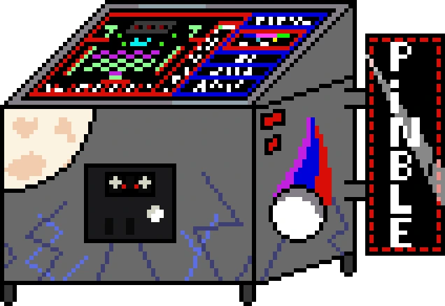
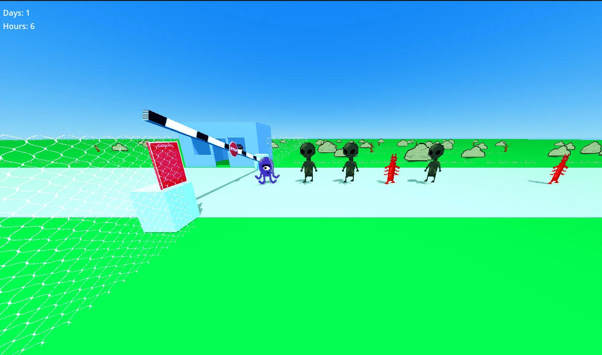

Pinble is a casual game where you need to score as many points as possible before losing your balls (sus)
In this game you will come across several stages with different mechanics and themes, as well as similar minigames that are played during the stages.
i was "hired" to make the pinble machine in pixel art, this is the machine :3
You have been hired to control the entry of aliens into Area 51, however, you will have to be aware of possible costumed invaders in this game inspired by Papers, Please
i participated with my friend to do this game on a game jam, she carried everything about coding, and i just made the game assts
MoonTalk is a website where you share stories and rumors about Moonlight Camp
to give some context, this site is part of an RPG that i'm participating in with some friends, i decided to create the entire website from scratch because i hadn't programmed in a while, and im happy with the result :)
notice that the entire website is in brazilian portuguese, in case you don't understand anything that is written on it
website is now discontinued because the rpg ended lol